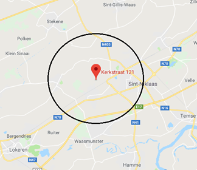
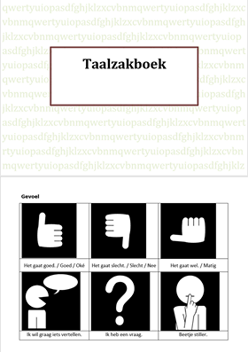

Volwassenen
Voor sommige mensen is het niet haalbaar om naar de praktijk te komen omwille van een fysisch letsel. Voor hen is het mogelijk om een huisbezoek aan te vragen.
 Gelieve dit te melden bij het eerste telefonische contact. Wij komen op huisbezoek in volgende regio’s:
- Belsele
- Puivelde
- Sinaai
- Sint-Pauwels
- Sint-Niklaas
- Waasmunster
- Lokeren (centrum)
Slikstoornissen
Dysfagie of een slikstoornis is een probleem dat optreedt voor, tijdens of na het slikken en vaak resulteert in een hevige hoestbui of ademnood. Dit kan zowel bij vloeistoffen als bij vast voedsel zijn. Bij progressieve ziektebeelden zoals ALS, MS, ziekte van Parkinson/Huntington, ... treden deze problemen vaker op. Het kan ook een ouderdomsverschijnsel zijn.
Wij helpen door aangepast voedingsadvies te geven en slikmanoeuvres aan te leren die ervoor zorgen dat het slikken veiliger verloopt.
Neurologische spraak- en taalstoornissen
Neurologische spraak- en taalstoornissen zijn meestal het gevolg van een hersenbloeding, hersentrauma of tijdelijk zuurstoftekort in de hersenen. Ze kunnen ook optreden bij progressieve ziektebeelden (ziektes de verergeren naarmate de ziekte vordert). De eerste zes maanden zijn cruciaal voor een goed herstel. We kunnen deze ziektes indelen in twee groepen:
- Dysartrie en apraxie of spraakstoornissen
Bij dysartrie zijn één of meerdere spraakcomponenten aangetast: ademhaling, fonatie (stemgeving), articulatie, resonantie of prosodie (toonhoogte, luidheid of spreektempo). Wij werken individueel volgens de wensen en noden van de patiënt.
Bij apraxie weet de patiënt wel wat hij/zij wil zeggen, maar loopt de planning van de spraak gestoord. Daardoor zegt de patiënt niet altijd wat hij of zij bedoelt. Meestal hebben deze mensen meer tijd nodig om te communiceren.
- Afasie of taalstoornissen

Bij afasie kan de taalproductie en/of het taalbegrip aangetast zijn afhankelijk van de plaats van het letsel. Hier is een snelle opstart van revalidatie uiterst belangrijk.
Via specifieke oefeningen proberen we de getroffen hersengebieden terug te activeren of ervoor te zorgen dat andere gebieden deze taken overnemen. Indien de taal of spraak te ernstig aangetast is, kunnen we in samenspraak met de patiënt op zoek gaan naar alternatieve communicatiehulpmiddelen zoals een pictogrammenboek, spraakcomputer, ...
Stemstoornissen
Als u een professionele stemgebruiker bent (muzikant, leerkracht, onthaalmedewerker, ...), kan het zijn dat u in de loop van uw carrière een stemprobleem ontwikkelt. Bij chronische heesheid/stemverlies of na een chirurgische ingreep is logopedie ook aangewezen. Het stemprobleem kan door de NKO-arts vastgesteld worden. Vaak gaat het hier om stembandknobbels, een cyste, stembandverlamming, ...
Wij proberen uw stemkwaliteit te verbeteren via het aanreiken van stemhygiënische maatregelen en leren u een correct stemgebruik aan via verscheidene technieken.